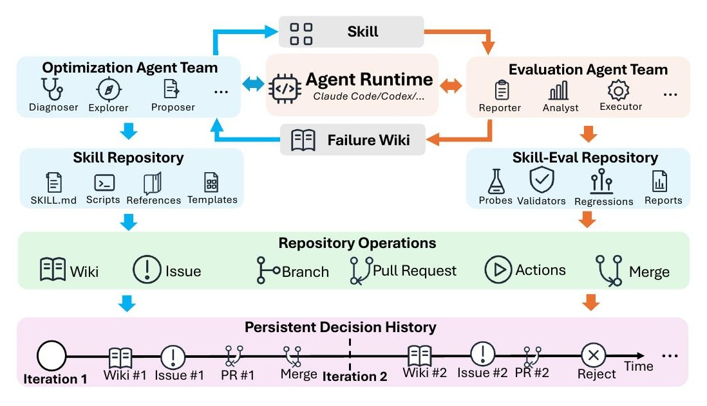
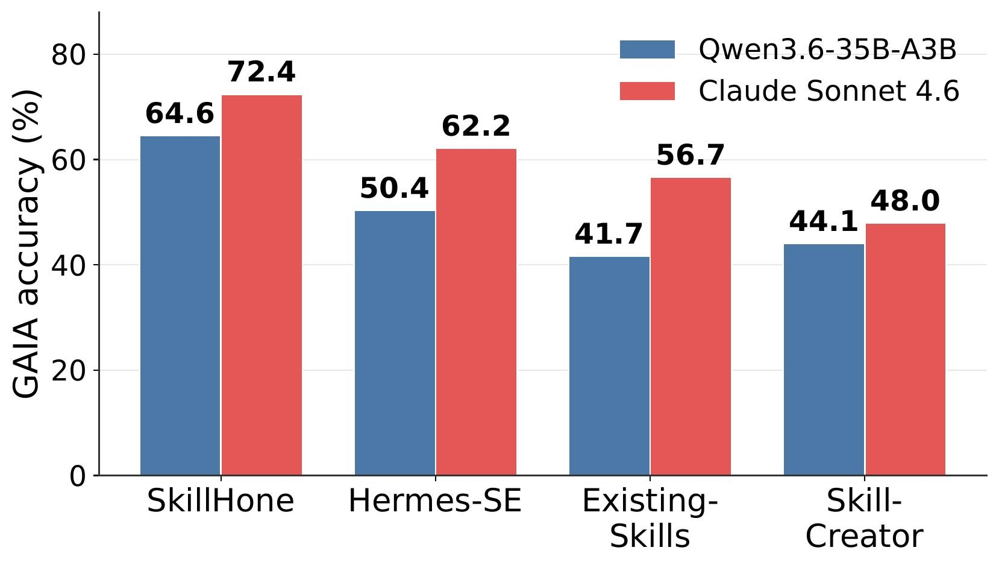
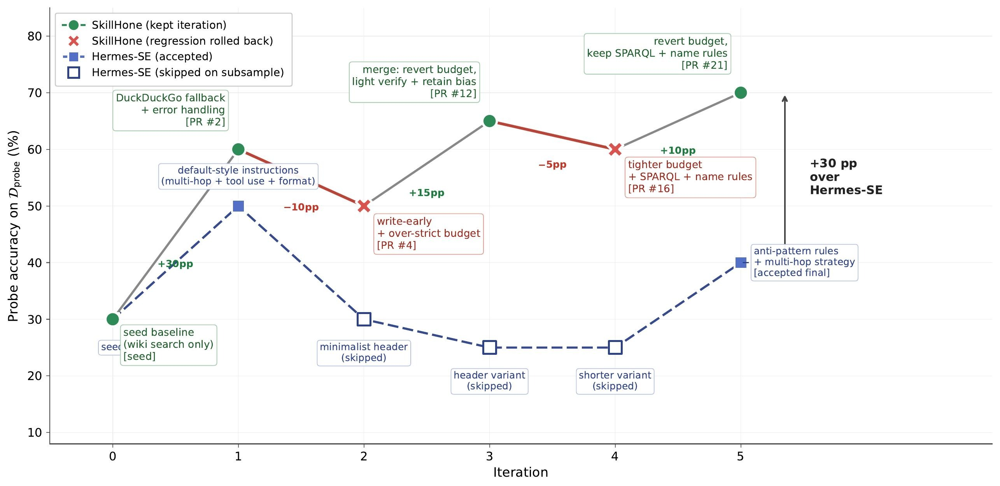

A two-minute walkthrough — what changes when a harness keeps the why of every revision, and why the same skill bundle then transfers across model backbones unchanged.
A diff shows what changed. SkillHone records why.
Agent skills extend language-model agents with task-specific procedures, scripts, and references — but the tasks and environments they target continually change. Existing methods polish skills in bounded runs and retain only the final artifact, discarding the decision history that later agents need to interpret prior revisions, evaluations, and rejected alternatives.
SkillHone represents each development step as a structured decision record. When the environment shifts, later subagents can inspect the persistent history to decide whether a failure is new, whether a similar fix was already attempted, and why an alternative was rejected — preventing redundant edits and accidental rollbacks of working repairs.
Diff vs. decision
A diff says how files changed. A decision record links that change to the problem it targeted and the evidence used to evaluate it. Long-lived skills need the latter.
Portable across runtimes
SkillHone records diagnoses, revisions, evidence, and outcomes under separated roles — portable across Claude Code, Codex, and Hermes runtimes.
Bundles that transfer
Improves skill development across public benchmarks and internal deployments, with skill bundles that transfer across execution backbones with no re-optimization.
One dispatcher, two role-separated teams, one persistent history.
SkillHone splits each step into optimization and evaluation dispatches. The dispatcher is a message router that creates subagents on demand and records accepted outcomes — making the optimizer/evaluator split structural rather than prompt-imposed.

Figure 1. At each step, fresh role-bounded subagents are dispatched. Routed evidence, repository operations, and recorded outcomes form a persistent decision history that later agents reuse.
Roles emerge from permissions, not prompts.
Each subagent is created on demand, assigned to a permission-bounded team, and granted only the actions it needs for that dispatch. The optimizer/evaluator split is enforced by what each team can read or write.
Proposer
Reads redacted reports and decision history; writes diagnoses. No access to probe targets or validators.
Explorer
Searches external resources for reusable patterns when a revision needs them. No access to probe targets or validators.
Developer
Edits the current skill and proposes typed revisions. No access to unredacted evaluation assets.
Reviewer
Reviews pending changes using redacted evidence and prior decision records. No access to probe targets.
Decider
Accepts or rejects candidate revisions according to recorded evidence. No access to unredacted evaluation assets.
Executor
Runs the current skill on probe items. May inspect oracle targets, validators, and traces. No skill-repo write access.
Diagnoser
Analyses outcomes and traces; updates evaluation diagnostics. No skill-repo write access.
Reporter
Produces redacted problem reports for the optimization side. No revision-decision authority.
Auditor
Checks probe metadata, traces, and redacted reports for evaluation-side consistency. No skill-repo write access.
Dispatcher
Creates subagents and routes artifacts between repositories. No direct skill edits; no access to unredacted probe targets.
Best average on both benchmarks — without curated search.
Under the raw open-web setting, agents receive no pre-integrated search tools and must organise search, parsing, extraction, and recovery through portable skill bundles. SkillHone leads both averages, despite the baseline keeping its commercial search stack.
| Setting | System | GAIA | WebWalkerQA-EN | ||||||
|---|---|---|---|---|---|---|---|---|---|
| L1 | L2 | L3 | Avg. | Easy | Med. | Hard | Avg. | ||
| Curated search | deep-research agent | 61.9 | 47.0 | 26.3 | 48.8 | 58.5 | 62.3 | 67.1 | 63.2 |
| Raw open-web | Existing-Skills | 64.3 | 33.3 | 21.1 | 41.7 | 51.2 | 48.5 | 52.6 | 50.2 |
| Skill-Creator | 64.3 | 37.9 | 21.1 | 44.1 | 36.6 | 36.9 | 40.8 | 38.1 | |
| Hermes-SE | 73.8 | 40.9 | 31.6 | 50.4 | 53.7 | 51.5 | 55.3 | 53.0 | |
| SkillHone (Ours) | 76.2 | 66.7 | 31.6 | 64.6 | 53.7 | 69.2 | 68.4 | 66.4 | |
Table 1. Main results. Bold marks the best score per column. SkillHone runs without curated search yet achieves the strongest averages.

Cross-backbone transfer
With zero re-optimization on the new backbone, the SkillHone skill bundle transfers from Qwen3.6-35B-A3B (development) directly to Claude Sonnet 4.6 (transfer).
SkillHone reaches 72.4% on GAIA under Sonnet 4.6 — beating Hermes-SE by 10.2 pp, Existing-Skills by 15.7, and Skill-Creator by 24.4. The gain reflects the skill procedure, not fitting to one model.
The controls are doing real work.
No decision history keeps role-separated subagents but starts each step from the latest skill artifact alone. No role separation keeps decision history but lets a single subagent access the skill repo and unredacted evaluation assets jointly.
| Variant | GAIA | WebWalkerQA-EN |
|---|---|---|
| SkillHone (full) | 64.6 | 66.4 |
| w/o decision history | 51.2 (−13.4) | 55.5 (−10.9) |
| w/o role separation | 58.2 (−6.4) | 61.1 (−5.3) |
Table 2. Ablation. Decision history is the larger lever.
Where persistent history earns its keep.
Probe-split trajectories for SkillHone vs. Hermes-SE across five optimisation iterations from a shared seed skill. SkillHone improves 30% → 70% while recovering from two regressed revisions through targeted follow-up edits. Hermes-SE accepts or rejects whole prompt candidates under a scalar validation signal.

Figure 2. Later revisions can target the offending part of a change while retaining useful edits — only possible when prior decisions are still inspectable.
+18.8 pp average across seven internal scenarios.
Beyond public benchmarks, SkillHone is deployed on internal tool-mediated analysis scenarios with exact-match evaluation. It improves six of seven seeded skills; gains concentrate where the initial procedure leaves reusable analysis steps underspecified.
Table 3. Optimised minus seeded accuracy on recurring internal scenarios.
BibTeX
@article{li2026skillhone,
title = {SkillHone: A Harness for Continual Agent Skill Evolution
Through Persistent Decision History},
author = {Li, Zhiwei and Hu, Yong},
year = {2026},
note = {WeChat AI, Tencent Inc.},
url = {https://github.com/Tencent/SkillHone}
}